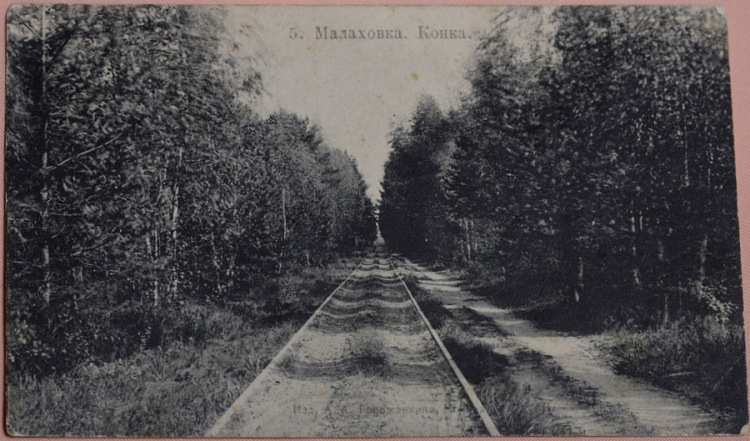
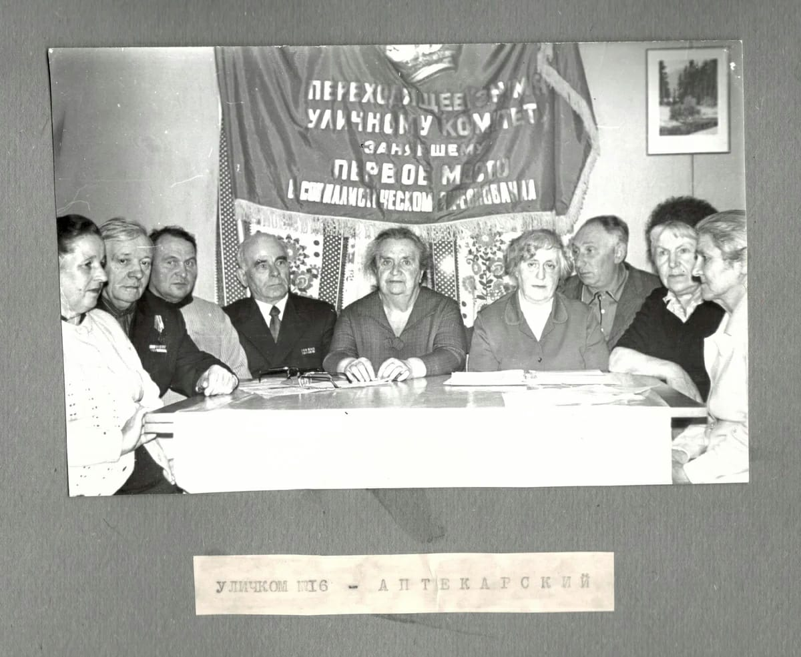
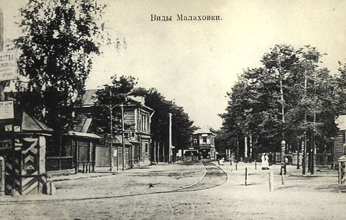

Улица Советская
Ранее Советская улица была частью дороги к Удельной и вовсе никак не называлась. В 1902 году на ней было начато строительство Петропавловского храма, а через 8 лет оно было окончено. С тех пор ее именовали Петропавловской, в честь храма. В 1911 году там открыли Летний Театр и провели конно-железную дорогу - конку. Предполагается, что она была организована братьями Соколовыми и содержалась за их счет.
Из публикаций краеведческого музея пос. Малаховка (подразделение МУК "Музейно-выставочный комплекс" г.о. Люберцы) явствует, что в 1899 году на заседании Правления Общества Московско-Казанской железной дороги было рассмотрено «Дело о сооружении подъездного конно-железнодорожного пути общего пользования к платформе Малаховка». На Петропавловской улице планировали построить конку. Для улучшения развития дачной жизни в Малаховке правление утвердило соглашение с владельцем земли, Алексеем Дорофеевичем Соколовым, по вопросу строительства конки в пределах его владения, в так называемом «сельце Малаховка». Предполагалось, что конная железная дорога будет эксплуатироваться дачниками в течение летнего сезона – с 1 мая по 1 сентября. Владение А. Д. Соколова в 1898 году составляло по длине 2,5 (2,6 км) версты, имело площадь 458,3 десятин и насчитывало около 200 дач. Планировалось, что конка, помимо передвижения дачников по сообщению между собою и купальнями на реке Македонка, может рассчитывать хотя бы на одного пассажира с каждой дачи, что даст 200 пассажиров в день с ежедневной выручкой. В числе аргументов в пользу устройства конки было указано также то, что расположение посёлка (возвышенность, сухое, подходящее для строительства место) очень удачно, но развитие малаховских дач возможно только при наличии удобного пути сообщения с железнодорожной станцией.
С учетом предполагаемого количества перевозок было запланировано оборудовать линию тремя лёгкими вагонами, один из которых отводился в запас. С большим вниманием были рассмотрены варианты заводов, которым Общество предполагало заказать вагоны для конки. Победил Коломенский завод. Стоимость строительства конно-железной дороги составила 2000 рублей. Маршрут конки начинался возле железнодорожного переезда, далее шёл по ул. Тургенева мимо парка (огибал парк сзади, парк кончался примерно там, где сейчас конюшня), далее – по ул. Петропавловской до конца. Протяженность маршрута – 3,2 версты туда и обратно (3,41 км), соответственно, длина перегонов – 1,6 верст (1,71 км). Ширина колеи – 5 футов (1,52м), скорость движения – 5 вёрст/ час (5,33 км/ч) Пропускная способность – 37 пар поездов. История конки закончилась в 1914 году. Ее частично разобрали на государственные нужды, частично разобрали дачники. К сожалению, все, что осталось от конки в наше время, - это небольшая часть рельса, которая хранится в Малаховском музее. Но главную улицу, по которой проходила конка, еще ждали перемены.
Переименование
С приходом советской власти было принято решение о переименовании улиц во всей стране. Не стала исключением и Малаховка. В 1920-е годы Телешовское шоссе стало Шоссейной улицей, Покровский проспект – Республиканской улицей, Луговая - Пионерской, Широкая просека – улицей Комсомольской, Плоховской проезд – улицей Февральской, Соколовская – улицей Свердлова, Петропавловская – Советской, Ильинский проспект – улицей Будённого (ныне ул. Щорса)… Название местности Змеёвка – по пустоши Поворово (позже Ворово-Змеёво), принадлежавшей во второй половине XVIII века гофмаршалу императорского двора М. М. Измайлову – превратилось в «Красную Змеёвку».
Уличные комитеты и их представители
Петропавловская улица в 1913 году
В советские годы Малаховка, как и другие населённые пункты, не имевшие районного деления, делилась на домовые управления и уличные комитеты. На 1970-е годы в Малаховке существовали следующие уличные комитеты: Южный, Тургеневский, Толстого, Северный, Овражки, Касимовский, Театральный, Свердловский, Лермонтовский, Красковский, Аптекарский, Рельсовый, Малаховский, Пионерский, Шоссейный, Заозёрный, Республиканский, Щорса, Кировский, Комсомольский, Красная Змеёвка, Суворовский, Красковский обрыв, Санаторный, Пехорка, посёлок ГЛЗ. Как правило, уличные комитеты всегда возглавляли активные, грамотные и небезразличные к жизни родной Малаховки люди. Общественная работа объединяла людей совершенно разных профессий. Среди известных в Малаховке деятелей уличкомов можно назвать Ангелину Алексеевну Калачёву (ул. Центральная) – начальника отдела кадров Института горного дела им. Скочинского и председателя объединённого совета уличных комитетов; воспитателя детского сада Тамару Константиновну Максимову (ул. Малаховская), бортпроводницу Наталью Ивановну Баландину (ул. Лермонтова). Во все годы существования уличных комитетов на должность председателя той или иной улицы избирались люди уважаемые, зачастую почетные граждане поселка.
Трудовая повинность по охране улиц
В первые годы советской власти особое значение придавалось охране общественного порядка в поселке: вводилась трудовая повинность, очень похожая на военную обязанность. В соответствии с этими правилами Малаховка была разделена на 12 охраняемых секторов, 5 из них находились в южной части посёлка, 7 - в северной. В первый сектор включён участок Малаховки по левой стороне Михневского шоссе от железной дороги до озера или даже до Быковского шоссе. Улицы: Луговая, Садовая, Теневая, Просёлочная, Обводная, Шоссейная, Рельсовая и Малаховская. В секторе номер два: Телешовское поле от садоводства Пушканова до гимназии, Гимназический проспект и дачи за гимназией до канавки на границе бывших имений «Озеро» и дачи «Плоховое». В третий и четвёртый секторы входили первое и второе «Плоховое» и «Моховое». Пятый сектор: улицы Февральская и Новый проспект, а также бывшее имение «Змеёвка». Шестой сектор находится в северной части посёлка и включал в себя Невский проспект (дорога вдоль железнодорожных путей с северной стороны), Красковский проспект до дачи Гросмана и Почтового проспекта. Сектор семь включал в себя Аптекарский проспект, ул. Лермонтова, Малую Коренёвскую и просеку к даче Соколова. Сектор номер восемь – это район дач по правую сторону Коренёвского шоссе до большого Театрального проезда и дач по правую сторону его мимо дачи Кравец, сюда входила ул. Петропавловская. В секторе девять значатся улицы: Южная, Тургеневская, Петропавловская и соединяющие их поперечные улицы. Сектор десять интересен тем, что, хотя в него входила только одна улица Некрасовская, охранять этот участок назначалось 6 человек, лишь на два меньше, чем по огромному девятому сектору. Одиннадцатый и двенадцатый секторы включали в себя Касимовку и Новую Малаховку (без указания улиц: это были изолированные от посёлка микрорайоны).